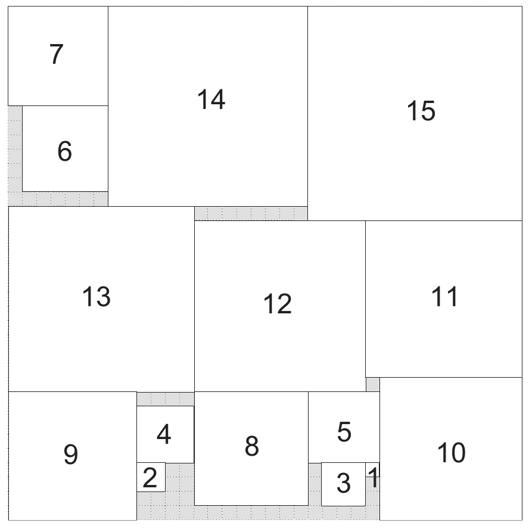

Square packing problem
Brief description
We have N squares of respectives size 1×1, 2×2,…, NxN. We have to fit them without overlaps into a square of size SxS.
Results up to N=56 are given here.
Optimal solution for 15 squares packed into a 36x36 square (Fig. taken from Takehide Soh)
{kind=link}
CFN model
We create an integer variable of domain size (S-i)x(S-i) for each square. The variable represents the position of the top left corner of the square.
The value of a given variable modulo (S-i) gives the x-coordinate, whereas its value divided by (S-i) gives the y-coordinate.
We have hard binary constraints to forbid any overlapping pair of squares.
We make the problem a pure satisfaction problem by fixing the initial upper bound to 1.
Python model
The following code uses the pytoulbar2 library to generate the cost function network and solve it (e.g. “python3 square.py 3 5”).
square.py
import sys
from random import randint, seed
seed(123456789)
import pytoulbar2
try:
N = int(sys.argv[1])
S = int(sys.argv[2])
assert N <= S
except:
print('Two integers need to be given as arguments: N and S')
exit()
#pure constraint satisfaction problem
Problem = pytoulbar2.CFN(1)
#create a variable for each square
for i in range(N):
Problem.AddVariable('sq' + str(i+1), ['(' + str(l) + ',' + str(j) + ')' for l in range(S-i) for j in range(S-i)])
#binary hard constraints for overlapping squares
for i in range(N):
for j in range(i+1,N):
ListConstraintsOverlaps = []
for a in [S*k+l for k in range(S-i) for l in range(S-i)]:
for b in [S*m+n for m in range(S-j) for n in range(S-j)]:
#calculating the coordinates of the squares
X_i = a%S
X_j = b%S
Y_i = a//S
Y_j = b//S
#calculating if squares are overlapping
if X_i >= X_j :
if X_i - X_j < j+1:
if Y_i >= Y_j:
if Y_i - Y_j < j+1:
ListConstraintsOverlaps.append(1)
else:
ListConstraintsOverlaps.append(0)
else:
if Y_j - Y_i < i+1:
ListConstraintsOverlaps.append(1)
else:
ListConstraintsOverlaps.append(0)
else:
ListConstraintsOverlaps.append(0)
else :
if X_j - X_i < i+1:
if Y_i >= Y_j:
if Y_i - Y_j < j+1:
ListConstraintsOverlaps.append(1)
else:
ListConstraintsOverlaps.append(0)
else:
if Y_j - Y_i < i+1:
ListConstraintsOverlaps.append(1)
else:
ListConstraintsOverlaps.append(0)
else:
ListConstraintsOverlaps.append(0)
Problem.AddFunction(['sq' + str(i+1), 'sq' + str(j+1)], ListConstraintsOverlaps)
#Problem.Dump('Square.cfn')
Problem.CFN.timer(300)
res = Problem.Solve(showSolutions=3)
if res:
for i in range(S):
row = ''
for j in range(S):
row += ' '
for k in range(N-1, -1, -1):
if (res[0][k]%(S-k) <= j and j - res[0][k]%(S-k) <= k) and (res[0][k]//(S-k) <= i and i - res[0][k]//(S-k) <= k):
row = row[:-1] + chr(65 + k)
print(row)
else:
print('No solution found!')
C++ program using libtb2.so
The following code uses the C++ toulbar2 library. Compile toulbar2 with “cmake -DLIBTB2=ON -DPYTB2=ON . ; make” and copy the library in your current directory “cp lib/Linux/libtb2.so .” before compiling “g++ -o square square.cpp -Isrc -Llib/Linux -std=c++11 -O3 -DNDEBUG -DBOOST -DLONGDOUBLE_PROB -DLONGLONG_COST -DWCSPFORMATONLY libtb2.so” and running the example (e.g. “./square 15 36”).
/**
* Square Packing Problem
*/
// Compile with cmake option -DLIBTB2=ON -DPYTB2=ON to get C++ toulbar2 library lib/Linux/libtb2.so
// Then,
// g++ -o square square.cpp -Isrc -Llib/Linux -std=c++11 -O3 -DNDEBUG -DBOOST -DLONGDOUBLE_PROB -DLONGLONG_COST -DWCSPFORMATONLY libtb2.so
#include "toulbar2lib.hpp"
#include <string.h>
#include <stdio.h>
#include <stdlib.h>
#include <unistd.h>
int main(int argc, char* argv[])
{
int N = atoi(argv[1]);
int S = atoi(argv[2]);
tb2init(); // must be call before setting specific ToulBar2 options and creating a model
ToulBar2::verbose = 0; // change to 0 or higher values to see more trace information
initCosts(); // last check for compatibility issues between ToulBar2 options and Cost data-type
Cost top = UNIT_COST;
WeightedCSPSolver* solver = WeightedCSPSolver::makeWeightedCSPSolver(top);
for (int i=0; i<N; i++) {
solver->getWCSP()->makeEnumeratedVariable("sq" + to_string(i+1), 0, (S-i)*(S-i) - 1);
}
for (int i=0; i<N; i++) {
for (int j=i+1; j<N; j++) {
vector<Cost> costs((S-i)*(S-i)*(S-j)*(S-j), MIN_COST);
for (int a=0; a<(S-i)*(S-i); a++) {
for (int b=0; b<(S-j)*(S-j); b++) {
costs[a*(S-j)*(S-j)+b] = ((((a%(S-i)) + i + 1 <= (b%(S-j))) || ((b%(S-j)) + j + 1 <= (a%(S-i))) || ((a/(S-i)) + i + 1 <= (b/(S-j))) || ((b/(S-j)) + j + 1 <= (a/(S-i))))?MIN_COST:top);
}
}
solver->getWCSP()->postBinaryConstraint(i, j, costs);
}
}
solver->getWCSP()->sortConstraints(); // must be done at the end of the modeling
tb2checkOptions();
if (solver->solve()) {
vector<Value> sol;
solver->getSolution(sol);
for (int y=0; y<S; y++) {
for (int x=0; x<S; x++) {
char c = ' ';
for (int i=0; i<N; i++) {
if (x >= (sol[i]%(S-i)) && x < (sol[i]%(S-i) ) + i + 1 && y >= (sol[i]/(S-i)) && y < (sol[i]/(S-i)) + i + 1) {
c = 65+i;
break;
}
}
cout << c;
}
cout << endl;
}
} else {
cout << "No solution found!" << endl;
}
delete solver;
return 0;
}